Séance 9 - La solidification des magmas II : roches volcaniques
Plan du cours
| Temps indicatif | Partie | Objectif |
|---|---|---|
| 0–40 min | Formation et mise en place des roches volcaniques | Comprendre la nucléation et la croissance des cristaux et des bulles, ainsi que les textures qui en résultent |
| 40–45 min | Questions générales | |
| 45–60 min | Pause | |
| 60–100 min | Application aux roches réelles | Relier les processus magmatiques aux roches observées |
| 100–105 min | Questions générales |
Roches subvolcaniques et volcaniques
Plusieurs modes de mise en place
Un magma peut se solidifier à différentes profondeurs et donner des roches aux textures variées.
Roches subvolcaniques : elles se solidifient à faible profondeur, notamment dans des dykes (intrusions discordantes qui peuvent conduire le magma) ou des sills (intrusions concordantes entre les couches encaissantes). Leur refroidissement est généralement plus lent qu’en surface, mais plus rapide qu’en profondeur. Elles peuvent présenter une texture microgrenue ou microlitique, parfois porphyrique.
Roches volcaniques : elles se forment à la surface, sous forme de coulées de lave ou de produits fragmentés. Le refroidissement est souvent rapide au contact de l’air, de l’eau ou de la glace. Elles peuvent présenter une texture microlitique ou vitreuse. Des phénocristaux peuvent témoigner d’une cristallisation amorcée en profondeur avant l’éruption.
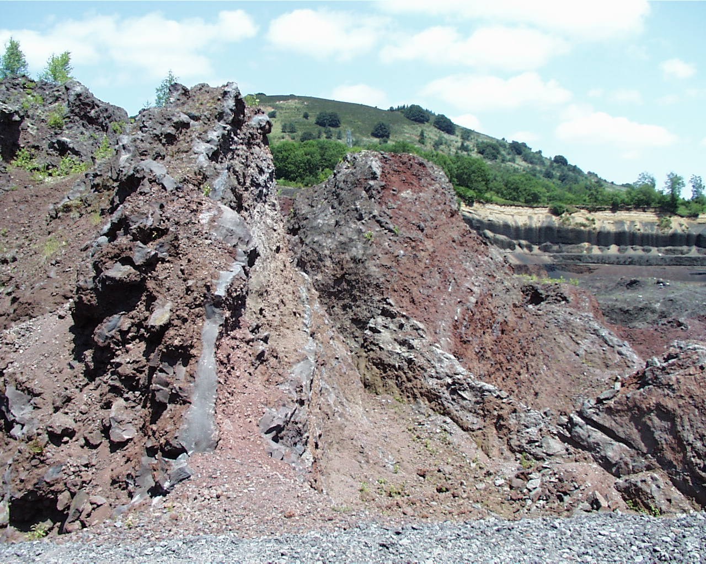
Rappel sur le mécanisme de formation des cristaux
Nucléation
Des atomes ou des ions s’assemblent dans le liquide pour former un germe cristallin stable. Le nombre de germes formés contribue à déterminer le nombre de cristaux qui pourront ensuite se développer.
Croissance
Les cristaux grandissent par ajout d’atomes ou d’ions à leur surface, depuis le liquide. Un grand nombre de germes et un temps de croissance limité favorisent la formation de petits cristaux, fréquents dans les roches volcaniques. À l’inverse, peu de germes et un refroidissement lent permettent la croissance de cristaux plus grands.
Sous-refroidissement
Pour une composition et une pression données, le sous-refroidissement est l’écart entre la température du liquidus et celle du magma. Il fournit une force motrice à la cristallisation et contrôle les vitesses de nucléation et de croissance : il influence ainsi le nombre et la taille des cristaux.

Rappel sur la nucléation homogène et hétérogène des cristaux
Nucléation homogène
Un germe cristallin apparaît spontanément au sein du liquide, sans surface préexistante. Il faut créer toute l’interface entre le germe et le liquide : le coût énergétique est élevé et cette nucléation demande donc un sous-refroidissement important.
Nucléation hétérogène
Un germe se forme sur une surface préexistante, par exemple un cristal ou une paroi. Comme une partie de l’interface entre le germe et le liquide existe déjà, la barrière énergétique est plus faible et la nucléation nécessite généralement moins de sous-refroidissement.
Quel type de nucléation est privilégié ?
Dans les magmas, les cristaux, les particules et les parois des conduits peuvent fournir des sites de nucléation hétérogène. Celle-ci est souvent favorisée, car sa barrière énergétique est plus faible. La nucléation homogène reste possible lorsque le sous-refroidissement est important ; la contribution de chaque mécanisme dépend de la composition et de l’histoire thermique du magma.
Exemple de deux populations de cristaux dans une roche volcanique

Les volatils présents dans les magmas
Que sont les volatils ?
Les volatils sont des espèces chimiques dissoutes dans le magma, susceptibles de former une phase gazeuse lorsque les conditions de pression, de température ou de composition changent.
La vapeur d’eau (H₂O) est souvent l’espèce volatile la plus abondante, suivie du dioxyde de carbone (CO₂). Les gaz soufrés, notamment le dioxyde de soufre (SO₂) et le sulfure d’hydrogène (H₂S), ainsi que le chlorure d’hydrogène (HCl) et le fluorure d’hydrogène (HF), sont présents en proportions variables selon les conditions physico-chimiques du magma.
La teneur en volatils influence le dégazage, la viscosité et les conditions de cristallisation du magma.
Des minéraux hydratés peuvent stocker des volatils
Des minéraux peuvent incorporer des volatils dans leur structure
Les micas et les amphiboles sont des minéraux hydratés : leur structure contient des groupements hydroxyle (OH), qui portent de l’hydrogène structural. Le fluor ou le chlore peuvent parfois se substituer aux groupements OH. Lors d’une déshydratation ou d’une fusion, ces minéraux peuvent libérer de l’eau.
L’eau peut également être dissoute directement dans le liquide magmatique : les volatils ne sont donc pas uniquement présents dans les minéraux.
Biotite
La biotite est un mica hydraté dont la formule simplifiée, K(Mg,Fe)₃AlSi₃O₁₀(OH)₂, montre que l’hydrogène est incorporé sous forme de groupements OH.

Amphibole
Les amphiboles sont des silicates hydratés à chaînes doubles. Leur formule générale simplifiée, A₀–₁B₂C₅T₈O₂₂(OH,F,Cl)₂, montre que le fluor et le chlore peuvent se substituer aux groupements OH.

Solubilité des volatils et décompression
La pression favorise la dissolution des volatils
En profondeur, la pression élevée permet au liquide magmatique de dissoudre une grande quantité de volatils. Lors de la remontée, la pression diminue et la solubilité de certaines espèces volatiles baisse. Le magma peut alors devenir sursaturé ; une phase gazeuse apparaît et les bulles peuvent croître au cours de la décompression.
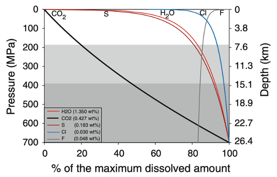
La solubilité dépend aussi de la composition du magma, de la température et du mélange de volatils. Une même décompression ne produit donc pas la même réponse dans tous les magmas.
Nucléation homogène et hétérogène des bulles
Nucléation homogène
Une bulle apparaît spontanément dans le liquide. Il faut créer entièrement l’interface entre le gaz et le magma : la barrière énergétique est élevée et une sursaturation importante peut être nécessaire.
Nucléation hétérogène
Une bulle se forme sur une surface déjà présente, par exemple un cristal ou une inclusion. La surface réduit l’énergie nécessaire à la création de l’interface ; la nucléation peut ainsi commencer à une sursaturation plus faible.
Les deux mécanismes peuvent intervenir au cours de la remontée. Les cristaux, les particules et les parois des conduits fournissent des sites de nucléation hétérogène. Celle-ci est souvent favorisée, car sa barrière énergétique est plus faible, tout comme pour les cristaux.
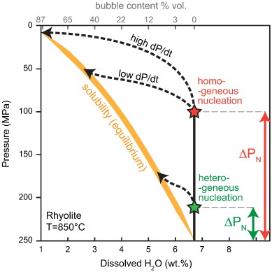
Le cas de la nucléation hétérogène : l’angle de mouillage des bulles
Un angle de contact qui influence la nucléation
Lorsqu’une bulle se forme sur un cristal, elle rencontre trois interfaces : gaz–liquide, gaz–cristal et liquide–cristal. Leur énergie relative détermine la forme de la bulle et l’angle de contact, appelé angle de mouillage.
Un angle favorable réduit le coût énergétique de la formation d’une bulle sur le cristal. La nucléation hétérogène peut alors débuter plus facilement que dans le liquide seul. Cet effet varie selon le minéral, le liquide et le gaz ; l’angle n’est donc pas une constante universelle.
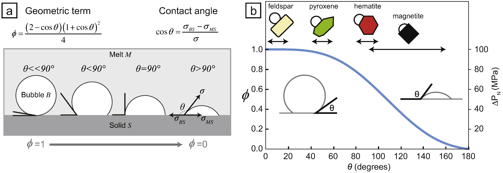
Exemple de roches vésiculaires
Taille et abondance des vésicules
- Nombreuses petites vésicules : elles peuvent traduire une nucléation abondante et/ou une croissance limitée ; elles sont fréquentes dans les ponces.
- Vésicules plus grandes : elles peuvent résulter d’une croissance prolongée ou de la coalescence de petites bulles ; les scories présentent souvent ce type de texture.
Dégazage et porosité
- Si le gaz s’échappe avant la solidification, le dégazage est efficace et la roche finale tend à être moins vésiculaire. Si une partie du gaz reste piégée dans le magma jusqu’à sa solidification, des vésicules sont préservées.
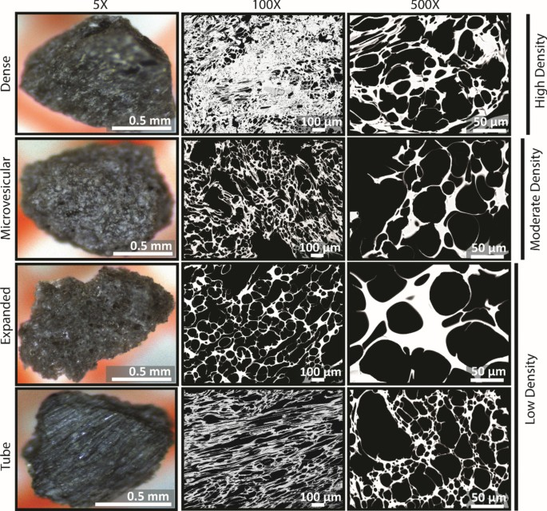
Que devient le gaz qui s’échappe du magma ?
Dégazage passif et fumerolles
Les bulles peuvent coalescer et former un réseau connecté. Si ce réseau devient suffisamment perméable, le gaz peut s’échapper du magma sans le fragmenter : ce dégazage passif est notamment observable sous forme de fumerolles.
Surveillance volcanique : le suivi du flux et de la composition des gaz des fumerolles peut révéler des changements du système magmatique. Associé à d’autres observations, comme la sismicité et la déformation du sol, il contribue à suivre l’activité du volcan et à évaluer le risque d’éruption (cf. séance 11).
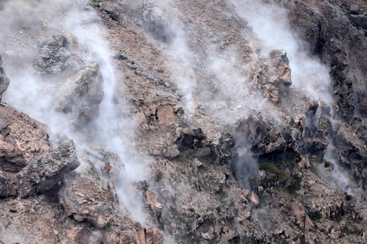
Qu’est-ce qui freine la nucléation et la croissance des cristaux et des bulles ?
Rappel sur les forces motrices
- Cristaux : le sous-refroidissement, lorsque la température passe sous le liquidus, favorise la cristallisation.
- Bulles : la décompression peut rendre le magma sursaturé en volatils ; une phase gazeuse peut alors se former.
Freins cinétiques
- Peu de sites de nucléation : sans surface préexistante (cristal, particule ou paroi), la nucléation homogène doit créer toute l’interface et rencontre une barrière énergétique plus élevée.
- Forte viscosité : elle ralentit la diffusion des espèces chimiques vers les cristaux et des volatils vers les bulles ; elle freine ainsi leur croissance et, pour les bulles, leur coalescence.
- Refroidissement ou décompression rapides : ils réduisent le temps disponible pour la croissance. Une décompression rapide peut déclencher la nucléation des bulles, mais celles-ci peuvent manquer de temps pour croître ou s’échapper.
Que se passe-t-il lorsque le magma n’a pas le temps de cristalliser ?
La vitrification du magma
Pour une composition et une pression données, le solidus marque la limite en dessous de laquelle aucun liquide n’est stable à l’équilibre. Lors d’un refroidissement rapide, la nucléation et la croissance des cristaux peuvent toutefois être trop lentes pour que le magma atteigne cet état d’équilibre. Dans ce cas, la viscosité du liquide augmente progressivement avec le refroidissement, jusqu’à ce que sa structure se fige au voisinage de la transition vitreuse (\(T_g\)). Le liquide forme alors un verre amorphe, qui peut encore contenir des cristaux formés auparavant.
La transition vitreuse est cinétique et se produit sur un intervalle qui dépend notamment de la composition et de la vitesse de refroidissement. Contrairement au solidus, elle ne correspond pas à une limite d’équilibre : elle marque le passage du liquide surfondu à un état vitreux rigide.
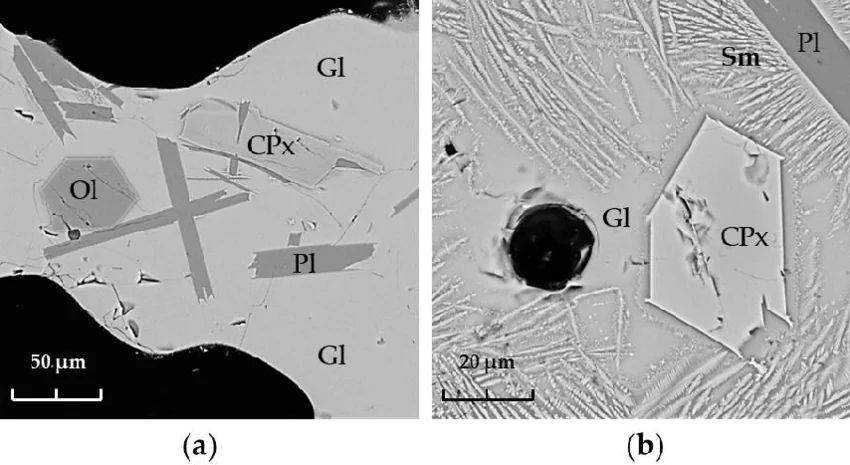
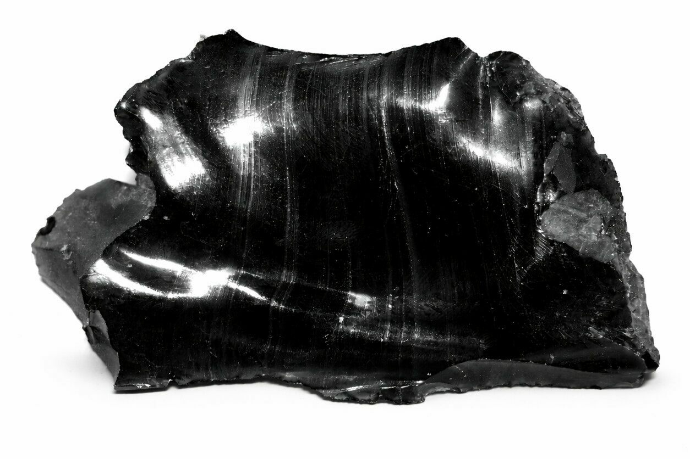
Produits volcaniques : laves, dômes et pyroclastes
Laves et dômes
Une lave est un magma arrivé à la surface. Lors d’une éruption effusive, elle s’écoule en coulées ou s’accumule en dôme si elle est très visqueuse. La viscosité dépend notamment de la composition du liquide, de sa température et de sa teneur en cristaux et en bulles. Avec le débit et la pente, elle contrôle la morphologie et l’étendue des coulées et des dômes, ainsi que leur refroidissement (cf. séances 11 et 12).
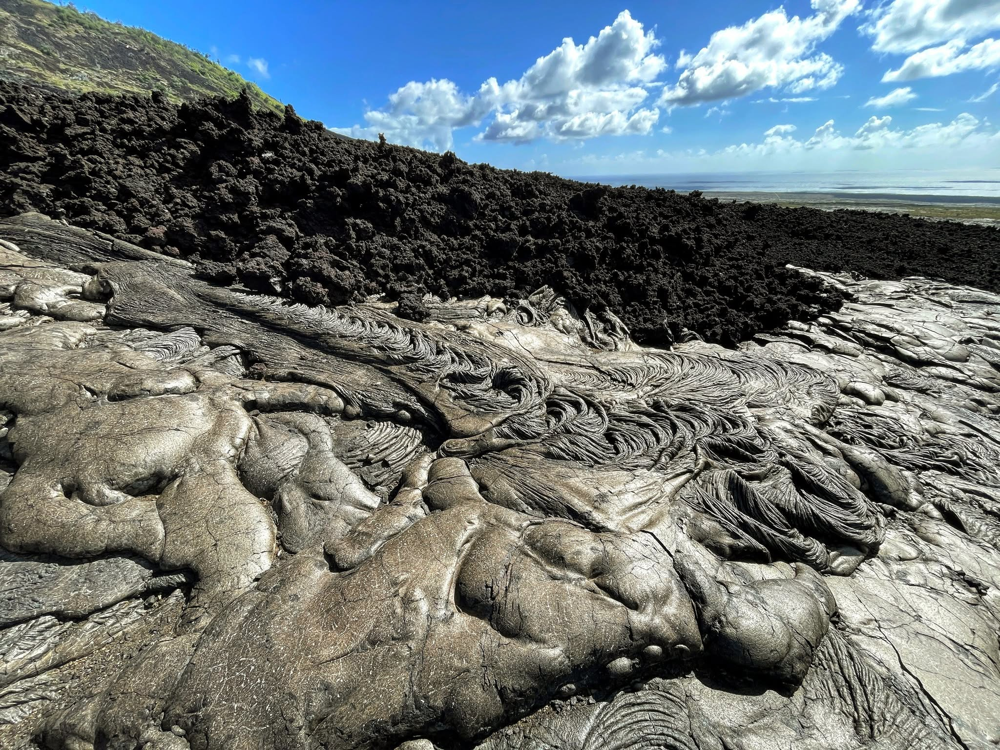
Pyroclastes
Les pyroclastes sont des fragments émis lors d’une éruption explosive. Ils peuvent provenir du magma ou de roches préexistantes arrachées aux parois du conduit. Transportés puis déposés, ils forment des dépôts dont la dispersion dépend notamment de la taille des fragments, de l’intensité de l’éruption et des conditions atmosphériques (cf. séances 11 et 12).
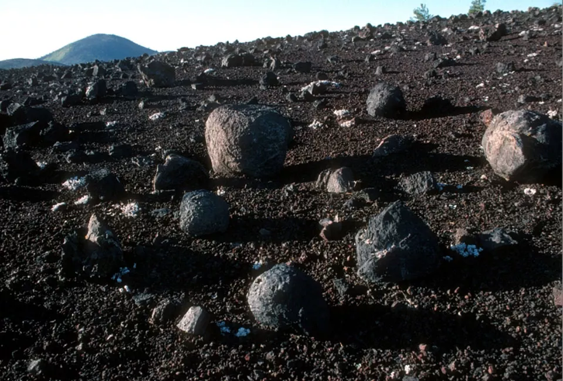
Les laves
Des morphologies contrôlées par les propriétés de la lave
Lors d’une éruption effusive, le magma atteint la surface sous forme de lave. Sa morphologie dépend de sa viscosité — liée notamment à la composition, à la température et à la teneur en cristaux et en bulles — ainsi que du débit, de la pente et du milieu de mise en place :
- pāhoehoe : lave généralement fluide, à surface lisse et souvent cordée.
- ʻaʻā : lave à surface rugueuse et fragmentée, favorisée lorsque la lave est plus visqueuse ou subit un cisaillement plus intense.
- Laves en coussins : lobes de lave formés sous l’eau et refroidis rapidement en surface.
- Dômes : accumulations de lave très visqueuse près de son point d’émission.
Épaisseur et refroidissement : une coulée épaisse refroidit plus lentement en son cœur qu’à ses marges. Les bordures et les fronts peuvent se bréchifier ; dans le cœur, le refroidissement et la contraction peuvent former des prismes, aussi appelés orgues volcaniques.
Laves pāhoehoe
Une lave basaltique fluide
La lave pāhoehoe forme une surface lisse, parfois plissée ou cordée. Sa croûte refroidie est portée par une lave encore mobile ; la coulée avance souvent par lobes successifs.
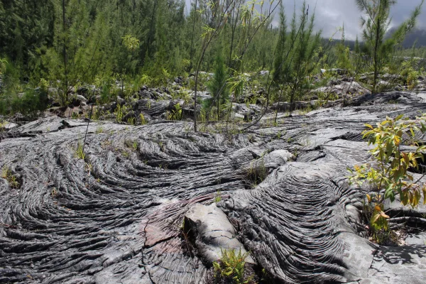
Laves ʻaʻā
Une surface rugueuse et fragmentée
La lave ʻaʻā présente une surface rugueuse formée de fragments et de blocs scoriacés. Elle se développe lorsque la croûte de la coulée se fragmente sous l’effet de l’écoulement, notamment si la lave est visqueuse et fortement déformée.
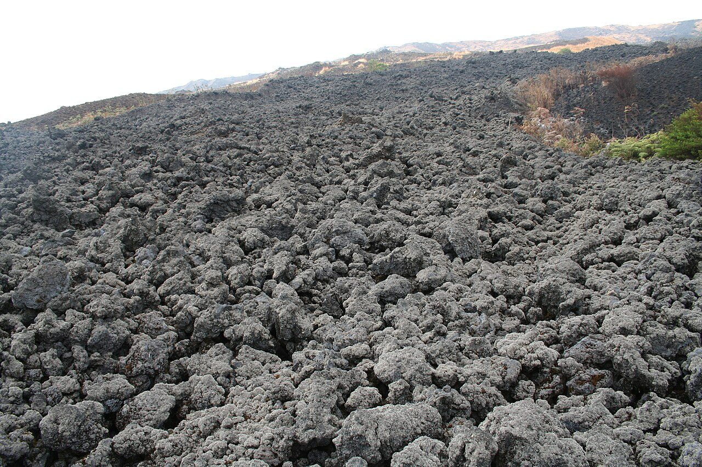
Transition entre les laves pāhoehoe et ʻaʻā
Une transition au cours d’une même coulée
Une coulée basaltique peut rapidement passer du faciès pāhoehoe au faciès ʻaʻā. En refroidissant, elle devient plus visqueuse ; si elle continue à avancer et à se déformer, sa croûte peut se rompre et se fragmenter. Le débit, la pente et le taux de déformation contribuent à cette transition, qui dépend surtout des propriétés physiques de la lave et non d’un changement de composition.
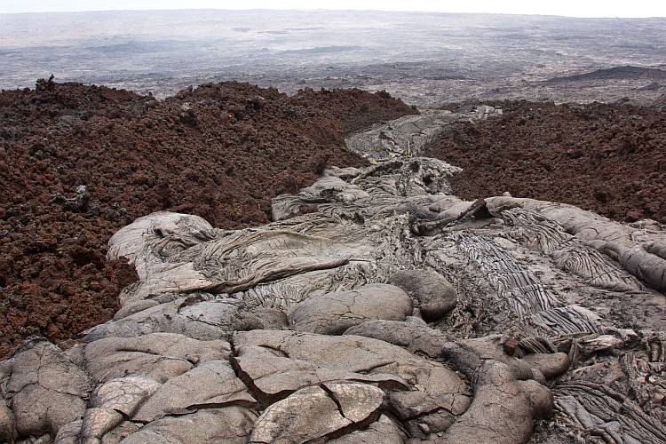
Laves en coussins
Des laves émises sous l’eau
Sous l’eau, la surface de la lave refroidit rapidement et forme une croûte, souvent vitreuse. Le cœur encore chaud continue à alimenter et à gonfler des lobes arrondis : c’est ainsi que se forment les laves en coussins. On les observe au fond des océans, mais aussi dans des ophiolites, fragments d’ancienne lithosphère océanique exhumés par les mouvements tectoniques.
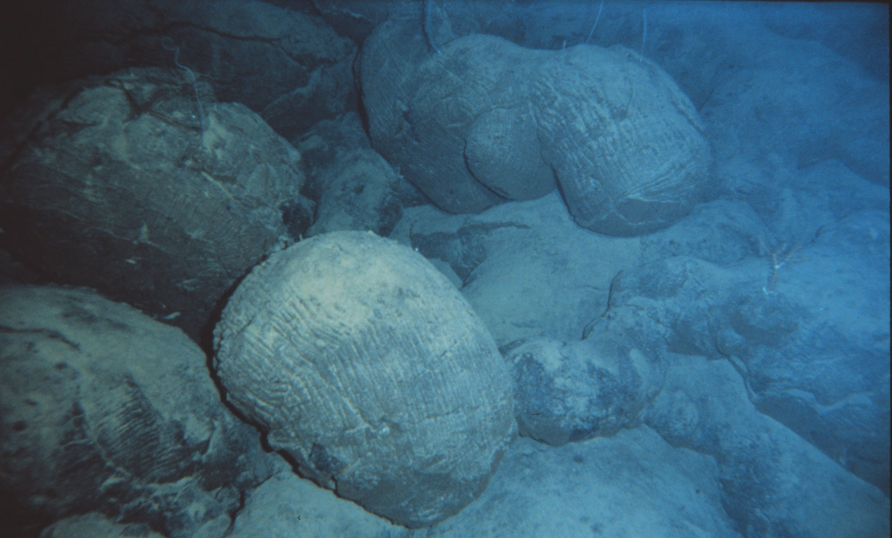
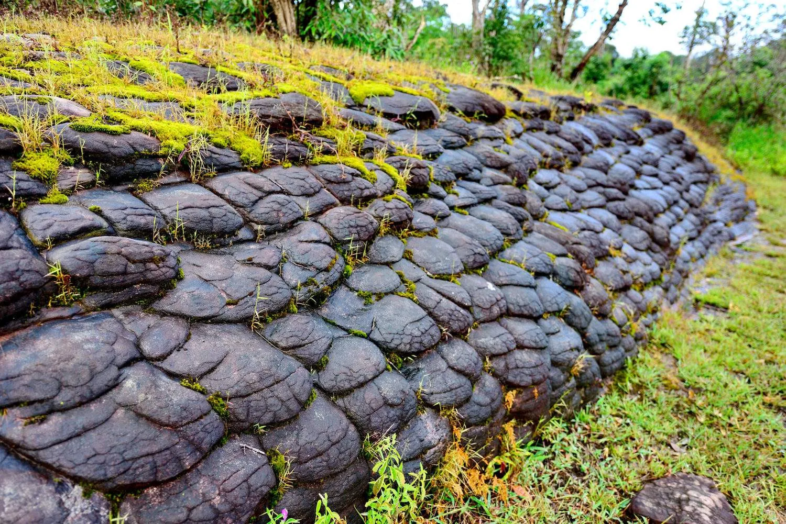
Brèches et prismes
Des structures liées au refroidissement
Dans une coulée épaisse, le refroidissement progresse des marges vers le cœur. La contraction de la lave en refroidissement peut former des prismes, généralement perpendiculaires aux fronts de refroidissement. Aux marges, le refroidissement rapide et le mouvement de la coulée peuvent fragmenter la lave et produire des brèches.
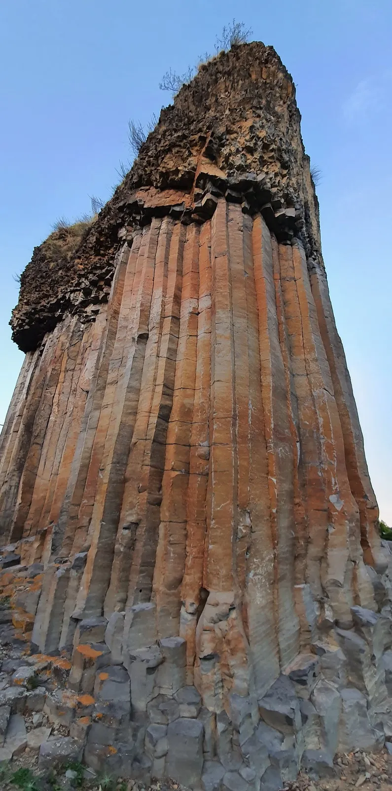
Dômes de lave
L’accumulation d’une lave visqueuse
Un dôme se forme lorsqu’une lave visqueuse, souvent riche en silice, s’accumule près de son point d’émission au lieu de s’écouler sur de longues distances. Sa croissance peut s’accompagner d’effondrements de blocs ou de flancs. On distingue les dômes endogènes (qui grossissent par gonflement interne) et les dômes exogènes (qui grossissent par accumulation de lobes successifs). La morphologie du dôme dépend de la viscosité de la lave, du débit et de la pente.
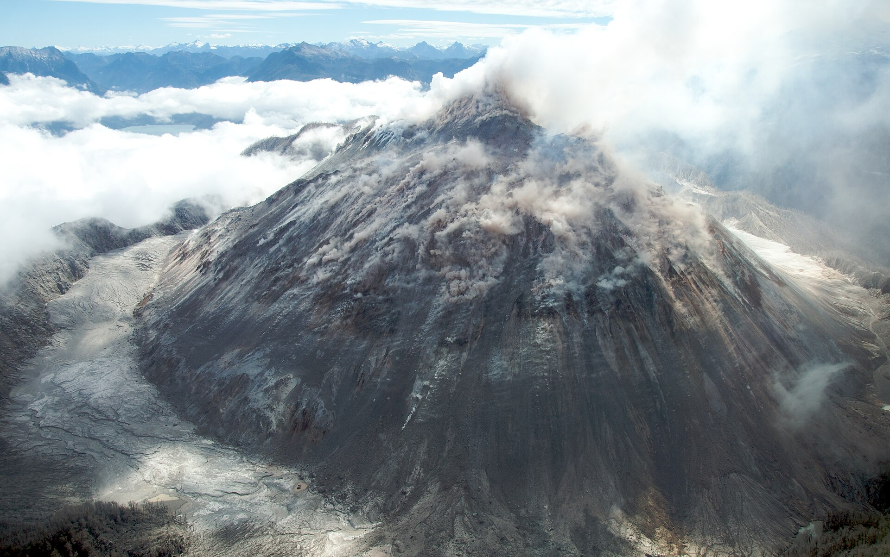
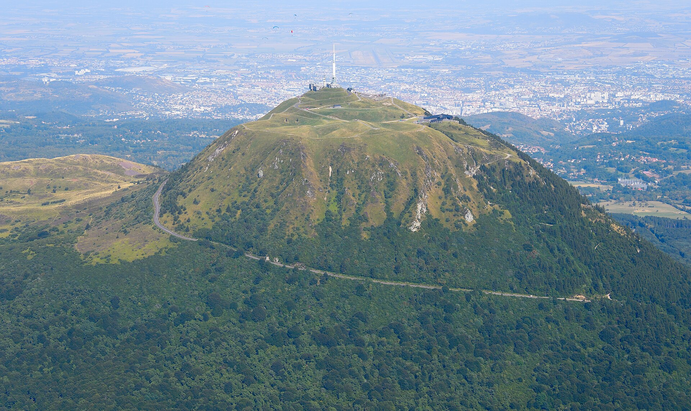
Les pyroclastes
Des fragments produits par les éruptions explosives
Les pyroclastes sont des fragments de magma ou de roches préexistantes produits par une éruption explosive. Leur taille dépend de leur fragmentation ; leur forme dépend aussi de leur nature et de leur histoire pendant le transport.
- Cendres : fragments de moins de 2 mm.
- Lapilli : fragments de 2 à 64 mm.
- Blocs et bombes : fragments de plus de 64 mm. Les bombes étaient encore plastiques lors de leur émission ; les blocs étaient déjà solides.
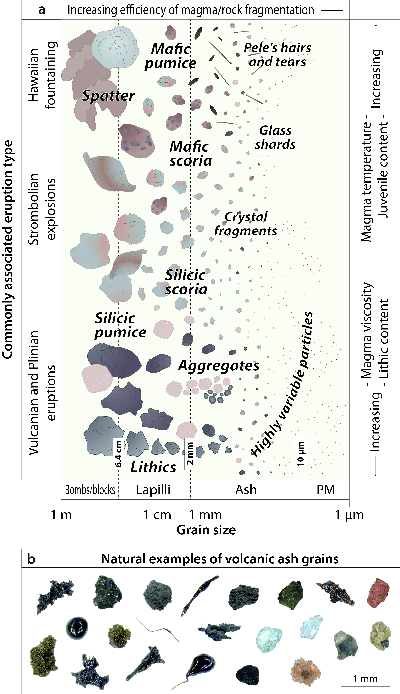
Rappel : grandes familles de roches volcaniques et équivalents plutoniques
| Composition générale | Roche volcanique fréquente | Équivalent plutonique indicatif |
|---|---|---|
| Mafique | basalte | gabbro |
| Intermédiaire | andésite | diorite |
| Intermédiaire à felsique | dacite | tonalite ou granodiorite |
| Felsique | rhyolite | granite |
| Alcaline | trachyte, phonolite, basanite | syénite ou roches à feldspathoïdes |
Ces correspondances sont indicatives : le nom précis dépend de la composition chimique et/ou de la minéralogie ; les roches alcalines n’ont pas d’équivalent plutonique unique.
Observer les échantillons de la collection
Pour chaque échantillon, décrivez d’abord les observations, puis proposez une interprétation de son histoire :
- Texture : taille des cristaux, présence de verre, abondance et taille des vésicules, présence de fragments.
- Interprétation : proposez des conditions de refroidissement, de dégazage et de mise en place compatibles avec ces observations. Indiquez les critères qui justifient votre interprétation ; ne déduisez une composition chimique ou minéralogique que si les données le permettent.
Messages à retenir
- Les roches subvolcaniques se solidifient à faible profondeur ; les roches volcaniques se forment à la surface, généralement dans des conditions de refroidissement plus rapide.
- Le sous-refroidissement et la décompression contrôlent respectivement la cristallisation et l’exsolution des volatils ; la nucléation et la croissance déterminent en partie les textures obtenues.
- Les produits volcaniques comprennent des coulées de lave et des dômes effusifs, ainsi que des dépôts pyroclastiques issus de la fragmentation.
- Les textures enregistrent l’histoire de refroidissement, de dégazage et de mise en place du magma.
- La classification des roches volcaniques repose, selon les cas, sur leur composition chimique (diagramme TAS) ou leur minéralogie (diagramme QAPF). Leurs textures cristallines et vésiculaires renseignent aussi sur leur refroidissement et leur dégazage.